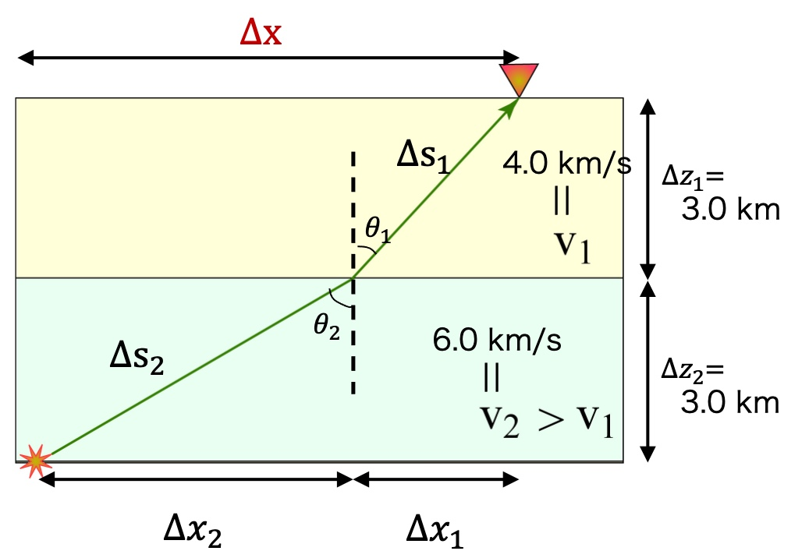

以下は、前回(第一回)と同じ内容です. 未だ登録していない方、アンケートに回答されていない方は、下記のリンクから登録・回答よろしくお願いします.
*受講者の方は下記のリンクからSlackに登録してください.
https://join.slack.com/t/2021-vfd8698/shared_invite/zt-pfnlem9c-9d6csm12FtXduxZ~y9P_Ag
*質問は#helpチャンネルに投稿してください.
*授業前アンケートにご協力ください.
https://forms.gle/LsHX5saFGg8Rk8GP7
*スライドを用いて本日の実習内容の導入をおこないます. 授業後にスライドをアップします.

上図のような地震源、観測点配置の場合に震央距離及び走時を計算してみよう.
ただし
taupでTauPのGUIを起動して, ModelやDistance(deg), Depth(km)を変えてCalculateしてみる.taup_path -mod prem -h 100 -deg 80 -ph S,ScS -gmt && sh taup_path.gmt
taup_curve -mod prem -h 100 -ph S,ScS -gmt && sh taup_curve.gmt
レコードセクション(地震波形を距離の順に並べて表示したグラフ)と走時曲線を重ねてプロットすることで、地震波形と走時曲線を比較してみる.
wget https://www.dropbox.com/s/8bfztbiisozb64t/recordSectionT.tar.gz
もしくは、
curl https://www.dropbox.com/s/8bfztbiisozb64t/recordSectionT.tar.gz -O -J -L
tar xvfz recordSectionT.tar.gz
cd recordSection_T && sh recordSection.sh